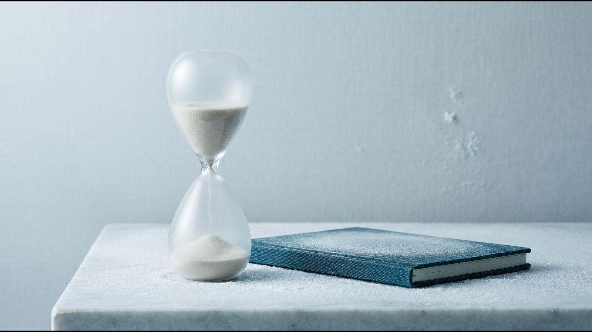
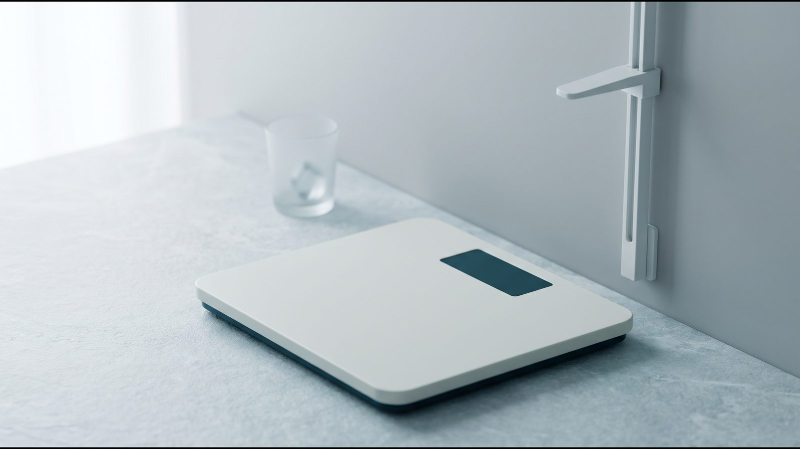

За скільки можна схуднути: калькулятор безпечного темпу

Як користуватися калькулятором
За скільки можна схуднути, залежить насамперед від розміру цілі. За безпечним темпом 0,5–1 кг на тиждень, який радить NHS, мінус 10 кг займає приблизно 10–20 тижнів. Калькулятор схуднення рахує такий діапазон дат від сьогоднішнього дня і попереджає, коли ціль виходить за перші 6 місяців: після них темп зазвичай сповільнюється (NHLBI, 1998).
Що ввести. Поточну і бажану вагу, зріст і вік. Якщо індекс маси тіла (ІМТ, вага в кілограмах, поділена на квадрат зросту в метрах) на бажаній вазі нижчий за 18,5, це недостатня маса за ВООЗ, і замість прогнозу калькулятор запропонує обговорити ціль з лікарем. Вік потрібен, бо розрахунок призначений лише для дорослих.
Як читати результат. Раніша дата відповідає темпу 1 кг на тиждень, пізніша відповідає 0,5 кг. Якщо ціль більша за 10 % ваги, калькулятор окремо покаже перший етап: NIDDK радить для початку знизити вагу на 5–10 % за 6 місяців.
Чому діапазон, а не одна дата. Вага щодня коливається через воду, а витрата енергії зменшується разом з вагою (Hall KD, Lancet 2011). Одна дата створює відчуття точності, якої в такому прогнозі немає.
Безпечний темп: скільки кілограмів на тиждень
NHS радить худнути поступово, на 0,5–1 кг на тиждень, а раціон зменшувати приблизно на 600 ккал на добу; CDC називає близький діапазон 1–2 фунти (0,45–0,9 кг). Отже, скільки можна схуднути за місяць без поспіху? Приблизно 2–4 кг. Класичне правило «дефіцит 500 ккал на добу дає 0,5 кг на тиждень» (NHLBI, 1998) завищує прогноз, і що довше, то більша похибка (Hall, Lancet 2011).
Скільки займають типові цілі, якщо тримати цей темп:
| Ціль | Строк за темпом 0,5–1 кг на тиждень | Що врахувати |
|---|---|---|
| −5 кг | 5–10 тижнів | для людини вагою 100 кг це 5 % ваги; за NHS, зниження на 5–10 % уже покращує здоров'я |
| −10 кг | 10–20 тижнів (2,5–4,5 місяця) | ціль укладається в перші 6 місяців |
| −15 кг | 15–30 тижнів (3,5–7 місяців) | після 6 місяців темп зазвичай сповільнюється (NHLBI, 1998), тож строк може бути довшим |
Чи повертається швидко скинута вага частіше? У рандомізованому дослідженні Purcell (Lancet Diabetes Endocrinol, 2014) ті, хто схуд щонайменше на 12,5 %, через 144 тижні етапу утримання повернули близько 71 % втраченої ваги і після швидкого (12 тижнів), і після поступового (36 тижнів) схуднення. Помірний темп обирають через ризики для жовчного міхура і м'язів, про які йдеться нижче.
Приклад: як схуднути на 10 кг і скільки це займе
За скільки можна схуднути на 10 кг, якщо людина важить 90 кг? За темпом 0,5–1 кг на тиждень калькулятор покаже 10–20 тижнів: якщо почати 1 листопада 2026 року, це приблизно з 10 січня до 21 березня 2027 року. Для 90 кг мінус 10 кг становить 11 %, а NIDDK радить як першу ціль 5–10 % за 6 місяців, тобто 4,5–9 кг.
Якщо дефіцит не переглядати. Калькулятор рахує строк за умови, що темп 0,5–1 кг на тиждень вдається тримати, переглядаючи раціон і активність; за незмінного дефіциту темп з часом падає. За динамічним правилом Hall (Lancet, 2011) кожні 100 кДж (близько 24 ккал) сталого зменшення раціону на добу з часом дають у середньої дорослої людини з надмірною вагою приблизно мінус 1 кг, причому половина зміни настає за рік, а 95 % за три роки. Тож стале зменшення на 500 ккал (близько 2 100 кДж) веде приблизно до мінус 21 кг, і перші 10 кг займуть близько року.
План харчування і руху для цієї цілі:
- Порахуйте добову норму і раціон з дефіцитом близько 600 ккал (NHS) у калькуляторі калорій.
- Складайте тарілку: половина — овочі й фрукти, чверть — цільнозернові, чверть — білкові продукти (Harvard Healthy Eating Plate); меню на тиждень є в статті харчування для схуднення.
- Плануйте 150–300 хвилин помірної активності на тиждень і силові вправи 2 дні або більше (ВООЗ, 2020).
- Зважуйтеся в однакових умовах і дивіться на тенденцію за кілька тижнів, а не на окремі дні.
Чому з часом темп сповільнюється
Перші тижні: вода і глікоген. Глікоген (запас вуглеводів у печінці й м'язах) зберігається разом із водою: на одну частину глікогену припадає три-чотири частини води (Kreitzman, Am J Clin Nutr 1992). Коли раціон зменшується, організм витрачає цей запас, і вага спершу падає швидше, ніж зменшується жир. Тому швидкий старт не варто переносити на весь план.
Далі: за меншої ваги тіло витрачає менше енергії. NHLBI (1998) зазначає, що приблизно після 6 місяців темп зазвичай знижується і вага виходить на плато. Hall (Lancet, 2011) називає правило «500 ккал на добу дають 0,5 кг на тиждень» помилковим: у його прикладі воно вже за перший рік завищує втрату приблизно вдвічі, бо не враховує пристосування організму до нової ваги.
Плато через 6–8 місяців. У моделі Hall його пояснює не стільки уповільнення обміну, скільки те, що раціону з часом важче дотримуватися. Причини плато розібрано в статті вага стоїть на місці.
Ризики дуже швидкого схуднення
Жовчні камені. За даними NIDDK, при тривалому голодуванні чи швидкому схудненні печінка виділяє в жовч більше холестерину, а жовчний міхур гірше спорожнюється. Дієти з дуже швидким схудненням частіше призводять до проблем із жовчним міхуром, ніж повільніші.
Втрата м'язів. У рандомізованому дослідженні Vink (Obesity, 2016) 57 людей худнули на раціоні 500 ккал на добу 5 тижнів або 1 250 ккал на добу 12 тижнів. Вага знизилася майже однаково, але частка втраченої нежирової маси (м'язи, органи, вода) у швидкій групі становила 8,8 % проти 1,3 % і була пов'язана з подальшим набором ваги.
Дефіцити поживних речовин. NICE NG246 (2025) радить не використовувати обмежувальні незбалансовані дієти: вони неефективні надовго й можуть шкодити. Раціон 800–1 200 ккал на добу NICE допускає лише в спеціалізованій службі, а менше 800 ккал лише за клінічної потреби; такий раціон має бути повноцінним за складом і тривати не довше 12 тижнів.
Як утримати досягнуту вагу
У дослідженні Purcell учасники повернули більшу частину втраченої ваги незалежно від темпу. Тому звички, з якими ви худнете, мають залишитися і після досягнення цілі.
- Рух. NICE NG246 зазначає, що людям, які схуднули після ожиріння, може знадобитися 60–90 хвилин активності на день, щоб вага не поверталася.
- Білок. За оглядом Leidy (Am J Clin Nutr, 2015), 1,2–1,6 г білка на кілограм ваги на добу покращує контроль апетиту і ваги, хоча довгострокові дані суперечливі.
Коли одного способу життя мало
Зверніться до ендокринолога, якщо:
- ІМТ 30 або вище: ВООЗ визначає ожиріння як хронічну хворобу, а NICE радить лікувати пов'язані з вагою стани, не чекаючи схуднення;
- ІМТ 25 або вище, а талія більша за половину зросту: тоді NHS радить показатися лікарю (перевірити можна в калькуляторі ІМТ);
- є діабет 2 типу, підвищений тиск, апное сну чи інші стани, пов'язані з вагою;
- ви приймаєте ліки, що можуть підвищувати вагу, наприклад глюкокортикоїди чи деякі антидепресанти (Endocrine Society, 2015): не відміняйте їх самі;
- кілька спроб не дали результату або вага щоразу повертається.
За NICE NG246, медичне лікування ожиріння поєднують зі зміною харчування й активності, а не призначають замість неї. Варіанти описано на сторінці лікування ожиріння, а як підготуватися до прийому, читайте в статті підготовка до консультації ендокринолога.
Часті запитання
Чи можна схуднути на 10 кг за місяць?
Безпечним темпом ні: це приблизно 2,3 кг на тиждень, у 2,3–4,6 раза швидше за темп, який радить NHS. Частина такої втрати в перші тижні припадає на воду з глікогеном. Дуже швидке схуднення підвищує ризик жовчних каменів (NIDDK) і втрати м'язової маси (Vink, 2016), а раціон менше 800 ккал NICE допускає лише під клінічним наглядом.
Скільки займе −10 кг після 40?
Безпечний темп той самий, 0,5–1 кг на тиждень, тобто 10–20 тижнів. За формулою Міффліна–Сан Жеора витрата енергії в спокої з кожними 10 роками менша приблизно на 50 ккал на добу при тій самій вазі й зрості, а за даними, які наводить FAO/WHO/UNU (2004), основний обмін з віком знижується приблизно на 1–3 % за десятиліття (у чоловіків близько 3 %, у жінок близько 2 %), частково через втрату нежирової маси. Під час менопаузи швидше накопичується жир і зменшується нежирова маса (дослідження SWAN, 2019), тому силові вправи щонайменше 2 дні на тиждень (ВООЗ) після 40 стають ще важливішими.
Чому перші кілограми йдуть швидше?
На старті організм витрачає запас глікогену разом із пов'язаною з ним водою (див. розділ про сповільнення темпу вище). Коли цей запас вичерпано, ваги показують повільніше зниження; до того ж зміна складу раціону сама змінює кількість води в тілі (Hall, 2011).
Чи треба рахувати калорії?
Не обов'язково. Головна умова за NICE NG246 — щоб енергії надходило менше, ніж витрачається; досягти цього допомагає й метод тарілки, а свою норму можна оцінити в калькуляторі калорій.
Джерела
- NHS. Overweight and obesity in adults (reviewed 29 April 2026). https://www.nhs.uk/conditions/overweight-and-obesity/
- NHS Better Health. Calories and weight loss. https://www.nhs.uk/better-health/lose-weight/calorie-counting/
- CDC. Losing Weight, 2025. https://www.cdc.gov/healthy-weight-growth/losing-weight/index.html
- NHLBI/NIH. Clinical Guidelines on the Identification, Evaluation, and Treatment of Overweight and Obesity in Adults: The Evidence Report, 1998. https://www.nhlbi.nih.gov/files/docs/guidelines/ob_gdlns.pdf
- Hall KD, Sacks G, Chandramohan D et al. Quantification of the effect of energy imbalance on bodyweight. Lancet, 2011. https://doi.org/10.1016/S0140-6736(11)60812-X
- NIDDK. Choosing a Safe & Successful Weight-loss Program, 2024. https://www.niddk.nih.gov/health-information/weight-management/choosing-a-safe-successful-weight-loss-program
- NIDDK. Dieting & Gallstones, 2017. https://www.niddk.nih.gov/health-information/digestive-diseases/gallstones/dieting
- Purcell K et al. The effect of rate of weight loss on long-term weight management: a randomised controlled trial. Lancet Diabetes Endocrinol, 2014. https://doi.org/10.1016/S2213-8587(14)70200-1
- Vink RG et al. The effect of rate of weight loss on long-term weight regain in adults with overweight and obesity. Obesity, 2016. https://doi.org/10.1002/oby.21346
- Kreitzman SN, Coxon AY, Szaz KF. Glycogen storage: illusions of easy weight loss, excessive weight regain, and distortions in estimates of body composition. Am J Clin Nutr, 1992. https://doi.org/10.1093/ajcn/56.1.292S
- NICE. Overweight and obesity management (NG246), 2025. https://www.nice.org.uk/guidance/ng246
- Bull FC et al. World Health Organization 2020 guidelines on physical activity and sedentary behaviour. Br J Sports Med, 2020. https://doi.org/10.1136/bjsports-2020-102955
- Harvard T.H. Chan School of Public Health. Healthy Eating Plate. https://nutritionsource.hsph.harvard.edu/healthy-eating-plate/
- Leidy HJ et al. The role of protein in weight loss and maintenance. Am J Clin Nutr, 2015. https://doi.org/10.3945/ajcn.114.084038
- WHO. Obesity and overweight. Fact sheet, 2026. https://www.who.int/news-room/fact-sheets/detail/obesity-and-overweight
- Apovian CM et al. Pharmacological management of obesity: an Endocrine Society clinical practice guideline. J Clin Endocrinol Metab, 2015. https://doi.org/10.1210/jc.2014-3415
- Mifflin MD et al. A new predictive equation for resting energy expenditure in healthy individuals. Am J Clin Nutr, 1990. https://doi.org/10.1093/ajcn/51.2.241
- FAO/WHO/UNU. Human energy requirements, 2004, розділ 5.5. https://www.fao.org/4/y5686e/y5686e09.htm
- Greendale GA et al. Changes in body composition and weight during the menopause transition. JCI Insight, 2019. https://doi.org/10.1172/jci.insight.124865
Матеріал має інформаційний характер і не замінює консультацію лікаря. Препарати призначає лікар після консультації.
Читайте також

